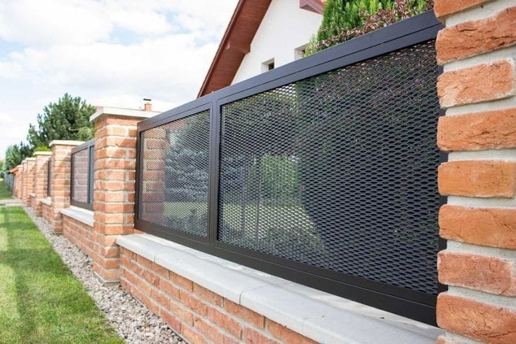

-


- 

Empresa
¿Que es Acrometal?
Acrometal es una Empresa de seguridad y Calidad, nos centramos en la fábrica de aberturas artísticas y herrería tradicional.
¿Cual es nuentro propositó?
Superar las expectativas y mejorar la Seguridad de nuestros clientes.
¿Por que elegirnos?
Nuestro conocimiento en el rubro y la pasión puesta en nuestro trabajos, garantizan nuestra producción y calidad. Contamos con el aval de 12 años en la producción de Aberturas de Hierro, Herreria Clasica y Tradicional. Detras de la calidad en nuestros productos; esta la Calidad de nuestra Gente.